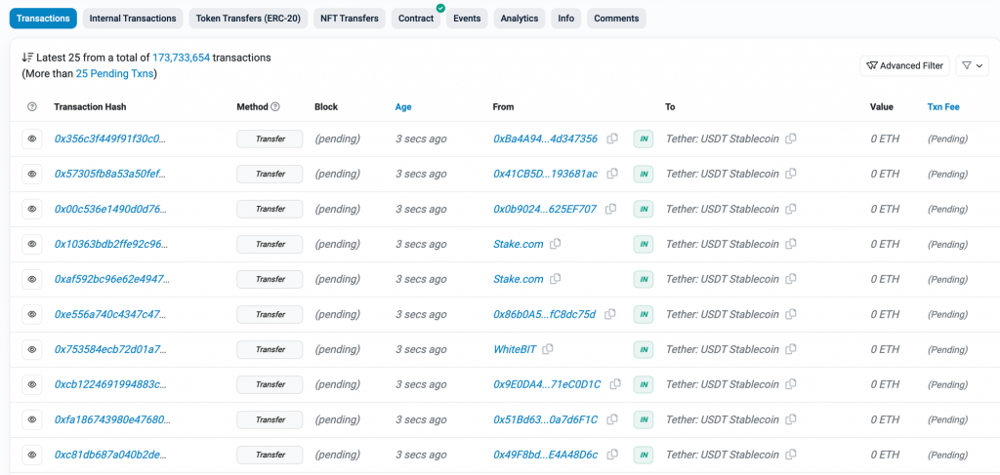
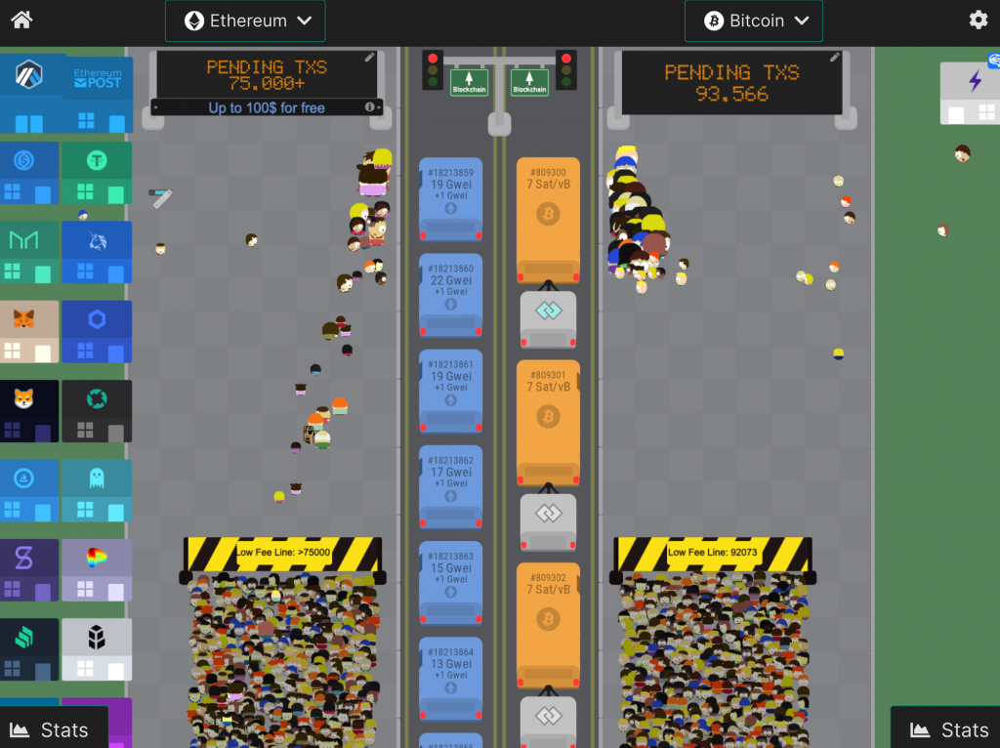
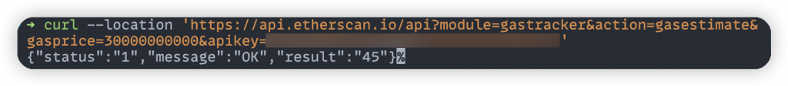
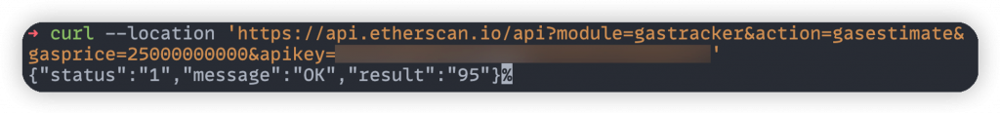
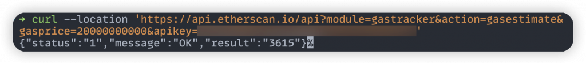
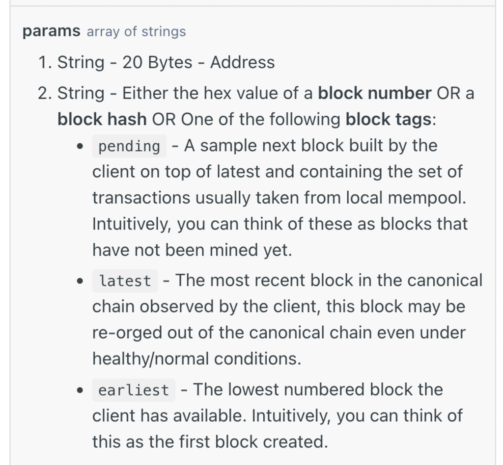
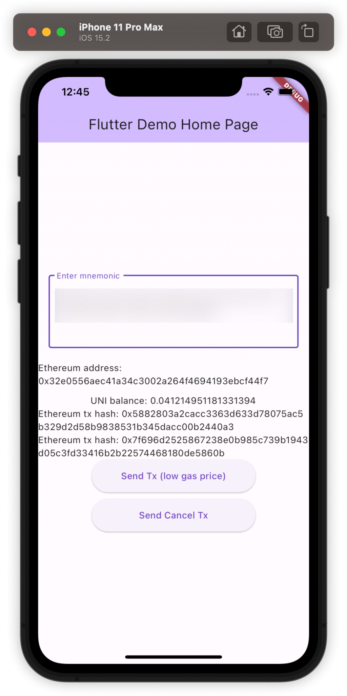
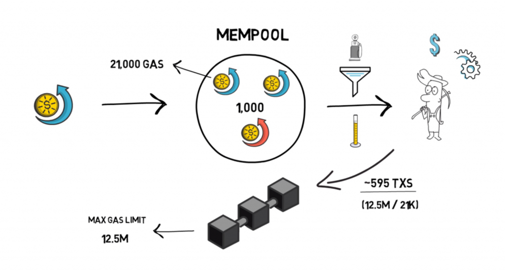
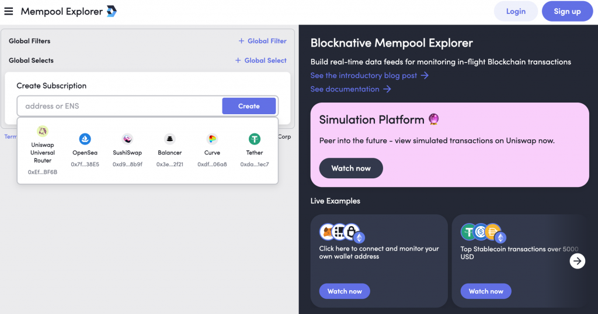
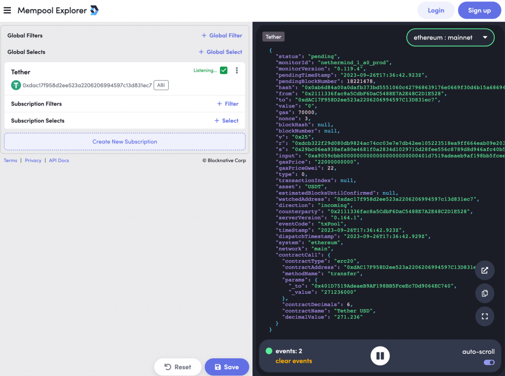

在錢包 App 中讓使用者清楚了解即時的交易狀態並擁有掌控權是十分重要的，這樣能讓使用者感受到更高的確定性，也提升了使用者體驗。因此交易管理是個重要的功能，今天會介紹在錢包 App 中可以透過怎樣的方式管理已發出的交易，包含取消、加速交易等操作，以及如何透過監聽 Mempool 中的交易資料來即時知道被卡在鏈上的交易有哪些。
一般的錢包 App 都會提供使用者自己設定交易 Gas Fee 的功能，這樣當使用者覺得一筆交易的執行速度沒有那麼重要時，可以設定一個較低的 Gas Fee 來節省成本。而當發出的交易 Gas Fee 太低時，在鏈上就會呈現 Pending 狀態，例如 Etherscan 上會在合約的交易列表中顯示 Pending 的交易：

如果交易的 Gas Price 越低，那他卡在 Pending 狀態的時間就會越長，因為要等到區塊鏈網路的 Gas Price 降到它指定的價格時，交易才能成功上鏈。因此一筆交易若 Gas Fee 太低可能會卡在鏈上好幾天！
有個網站叫 TxStreet，可以看到比特幣跟以太坊網路即時的區塊狀態以及打包交易上鏈的圖像化過程，以及這些交易是從哪些 DApp 而來，非常有趣推薦讀者進去看看。圖中左邊呈現的以太坊狀態可以看到當下有 75000 以上個 Pending Transaction：

Pending Transaction 常常造成初次使用以太坊的人的困擾，因為當上一筆交易還在 Pending 時又往後送出了幾筆交易，也全部都會一起被卡住，讓使用者以為交易都發不出去。這樣有什麼好方法可以提升使用者體驗呢？
既然使用者的意圖有時就是想設定一個比較低的 Gas Fee，導致交易會花更多時間才上鏈，因此一種做法是：告訴使用者這筆交易的 Gas Price 大約會花多久才能上鏈，並即時更新這個數字。
Etherscan 有提供一個 API 來估計給訂一個 Gas Price 的交易大概需要花幾秒才能上鏈，也就是 gasestimate API。使用方式很簡單：



由於當下的建議 Gas Price 為 24 Gwei，嘗試估計 30 Gwei, 25 Gwei, 20 Gwei 的結果分別是 45 秒, 95 秒, 一小時，這樣的結果是合理的，因為如果送出的 Gas Price 跟當下建議的 Gas Price 差不多，也很難保證接下來幾個 block 的 Gsa Fee 不會馬上變高。而 20 Gwei 估計出一小時的原因是他無法預測 Gas Fee 何時才會降到 20 Gwei，這種情況 Etherscan 自己就會顯示待確認時間為「>1 小時」。同樣的判斷邏輯就可以應用在錢包 App 的顯示上。
除了估計 Transaction Pending 的時間外，當使用者有 Pending Transaction 且又想發送新的交易時，也要注意避免新的交易用到跟舊交易一樣的 Nonce 導致交易被覆蓋掉。要了解這個細節可以先回顧在 day 13 中提到的 Token Transfer Transaction 實作：
[code] final transferTx = Transaction.callContract( contract: contract, function: transferFunction, parameters: [EthereumAddress.fromHex(toAddress), amount], maxFeePerGas: await web3Client.getGasPrice(), maxPriorityFeePerGas: await getMaxPriorityFee(), ); final tx = await signTransaction( privateKey: privateKey, transaction: transferTx, );
[/code]
裡面並沒有指定 Nonce，而是讓 web3dart
套件幫我們處理，因此要進去看他內部是如何實作拿 Nonce 的。稍微 trace 一下
code 會找到 _fillMissingData() function 內會把沒有設定的
Nonce 值補上：
[code] Future<_SigningInput> _fillMissingData({ required Credentials credentials, required Transaction transaction, int? chainId, bool loadChainIdFromNetwork = false, Web3Client? client, }) async { // … final nonce = transaction.nonce ?? await client! .getTransactionCount(sender, atBlock: const BlockNum.pending()); // … }
[/code]
可以看到他去呼叫了 RPC Node 的 eth_getTransactionCount
方法，並帶入 atBlock = pending 的參數。這個參數的意義可以在
Alchemy
的文件中找到：

這個參數主要是指定要以什麼時間點來查詢當下的資料，因此我也可以用它來查詢過去某個 block 時某個地址已經發出的幾個交易，許多 RPC method 都有支援這個參數。
至於 pending 指的是也把還在 Pending
狀態的交易也考慮進來算一個地址的 Transaction Count，背後是因為 Alchemy
可以在自己的 Mempool 中追蹤一個地址有哪些 Pending
Transaction。因此到這裡我們就理解了 web3dart
套件在發送交易時更細緻的行為：如果使用者連續發送多筆交易但前面的交易還在
pending 狀態的話，他還是能正確查到下一筆交易的 Nonce
應該要用多少，而不會誤把舊的交易覆蓋掉。
如果使用者沒有想發送新的交易，而是改變心意了想要上一筆交易盡快確認，或是不想執行交易了，那要怎麼處理呢？可以反過來利用以太坊中同樣的 Nonce 只會有一筆交易上鏈的特性，把使用者上一個執行的交易覆蓋掉。
例如當使用者想取消交易時，常見的作法是發一筆交易轉 0 ETH 給自己，並且 Gas Fee 必須至少比上一筆同 Nonce 的交易高 10%（否則會出現 Day 19 提到的 Replacement Transaction Underpriced 錯誤）。會發送轉 ETH 交易的原因是他所花的 Gas 數量是所有以太坊交易中最低的（也就是 21,000），可以節省這筆交易的 Gas Fee。實作基於 Day 13 的程式碼改寫如下：
[code] class TransactionWithHash { final String hash; final Transaction transaction;
TransactionWithHash({
required this.hash,
required this.transaction,
});
}
Future<TransactionWithHash> sendCancelTransaction({
required EthPrivateKey privateKey,
required int nonce,
required EtherAmount lastGasPrice,
}) async {
try {
// 20% up
final newGasPrice =
lastGasPrice.getInWei * BigInt.from(6) ~/ BigInt.from(5);
final cancelTx = Transaction(
from: privateKey.address,
to: privateKey.address,
maxFeePerGas: EtherAmount.inWei(newGasPrice),
maxPriorityFeePerGas: EtherAmount.inWei(newGasPrice),
maxGas: 21000,
value: EtherAmount.zero(),
nonce: nonce,
);
final tx = await signTransaction(
privateKey: privateKey,
transaction: cancelTx,
);
print('tx: $tx , nonce: $nonce');
final txHash = await sendRawTransaction(tx);
print('txHash: $txHash');
return TransactionWithHash(hash: txHash, transaction: cancelTx);
} catch (e) {
rethrow;
}
}[/code]
並且把原本 Send Token 的交易實作計算 Gas Fee 時，給他比較低的 Gas Fee，包含把 Max Priority Fee 設定為 0，就能演示這個取消交易的功能：
[code] // in sendTokenTransaction() // … final nonce = await web3Client.getTransactionCount( EthereumAddress.fromHex(privateKey.address.hex), atBlock: const BlockNum.pending(), );
var maxFeePerGas = await web3Client.getGasPrice();
maxFeePerGas = EtherAmount.inWei(maxFeePerGas.getInWei - BigInt.from(1));
var maxPriorityFeePerGas = EtherAmount.zero();
final transferTx = Transaction.callContract(
contract: contract,
function: transferFunction,
parameters: [EthereumAddress.fromHex(toAddress), amount],
maxFeePerGas: maxFeePerGas,
maxPriorityFeePerGas: maxPriorityFeePerGas,
nonce: nonce,
);
// ...[/code]
並在畫面上加上取消交易的按鈕，以呈現發出一筆交易後再發出取消交易可以把上一筆覆蓋掉的效果：
[code] class _MyHomePageState extends State
void sendToken() {
final ethPriKey = EthPrivateKey.fromHex(ethWallet!.privKey!);
sendTokenTransaction(
privateKey: ethPriKey,
contractAddress: uniContractAddress,
toAddress: "0xE2Dc3214f7096a94077E71A3E218243E289F1067",
amount: BigInt.from(10000),
).then((tx) {
setState(() {
ethTxHashs.add(tx.hash);
lastTx = tx.transaction;
});
});
}
void sendCancelTx() {
if (lastTx == null) {
return;
}
final ethPriKey = EthPrivateKey.fromHex(ethWallet!.privKey!);
sendCancelTransaction(
privateKey: ethPriKey,
nonce: lastTx!.nonce!,
lastGasPrice: lastTx!.maxFeePerGas!,
).then((tx) {
setState(() {
ethTxHashs.add(tx.hash);
});
});
}
// ...
// in build()
SizedBox(
width: 250,
height: 50,
child: ElevatedButton(
onPressed: sendToken,
child: const Text('Send Tx (low gas price)'),
),
),
const SizedBox(height: 10),
SizedBox(
width: 250,
height: 50,
child: ElevatedButton(
onPressed: sendCancelTx,
child: const Text('Send Cancel Tx'),
),
)
// ...[/code]
實際跑起來後，如果點擊 Send Tx 後會發現對應的 Tx Hash 在 Sepolia 會找不到（沒上鏈的交易），因為 Gas Fee 太低他不會馬上上鏈，而再點擊 Send Cancel Tx 後新的交易反而會上鏈（有上鏈的交易）。

至於加速交易的寫法也很類似，只要把上一筆交易的欄位原封不動留下，並把 Gas Price 增加重新發出即可，相關程式碼在這邊就省略。
若使用以上解法來管理已送出的交易，在單一裝置使用錢包時就可以做到清楚明瞭的使用者體驗了。但還有一種比較邊緣的情況沒有考慮到，就是當使用者用同一個錢包地址在其他平台（例如瀏覽器 Extension）發送過一個低 Gas Fee 的交易，有沒有機會在 App 上也呈現這筆交易的內容以便使用者加速或取消它呢？
在 Day 19 也有稍微提到以太坊 Mempool 的概念，他是 Memory Pool
的簡稱，簡單來說這個地方聚集了所有已經廣播出去但還沒上鏈的交易。當我們呼叫一個
RPC 節點的 eth_sendRawTransaction
方法時，等於是請該節點幫我們廣播這筆交易給所有其他以太坊的節點，節點就會把這些交易存在自己的
Memory 中，就形成了 Mempool。
在這些節點中如果有開啟挖礦功能的就是以太坊的礦工，他們會負責決定下一批要被打包的交易有哪些（通常會按照給的 Gas Price 由高而低排序），而未上鏈的交易來源就會從 Mempool 而來。

(圖片來源)
由於 Mempool 裡的交易所有以太坊礦工都能看到，任何人也能透過 API 去拿到目前在 Mempool 中的交易有哪些。不過這也導致了交易受到 MEV 攻擊的機會，簡單來說在一些狀況只要有人發現特定的交易出現在 Mempool 中，就能透過 Front run 或 Back run 的方式對這個交易套利。因此也衍生出發送 Private Transactions 的需求，也就是不透過 Mempool 而直接把交易送給礦工的作法。相關的概念可以參考 Flashbots 以及 Alchemy 關於 Private Transactions 的解釋
市面上有一些能夠取得 Mempool 中交易資料的服務，例如 Blocknative 跟 Quicknode ，都有提供訂閱 pending transaction 資料的功能。以下使用 Blocknative 來舉例，讀者可以到 Blocknative Explorer 試著查看即時的 Mempool 資料：

在地址欄位可以輸入任意想監聽的地址，例如點擊 Tether (USDT) 後可以開始監聽 USDT 合約的所有 pending transactions，並顯示在右邊。在畫面上也可以創建複雜的 Filter，例如只過濾出呼叫特定合約 function 的交易，或是特定來源地址的交易等等：

另外 Blocknative 也有提供 Mempool 相關的監聽 API，不過他的 API 比較適合從後端接上去監聽所有以太坊的 pending transactions，並過濾出 App 中需要的交易，但這個機制的完整實作已經超出了今天的範圍，因此有興趣的讀者可以試著串接看看他的 API 來監聽自己地址發出的交易。
今天我們介紹了在 App 上如何管理已發出的交易來提升使用者體驗，包含讓使用者加速或是取消既有的交易，以及介紹更多 Mempool 的機制與 Blocknative 的服務，相關程式碼在這裡。明天會來介紹 Wallet App 中要如何實作 Wallet Connect 協議。